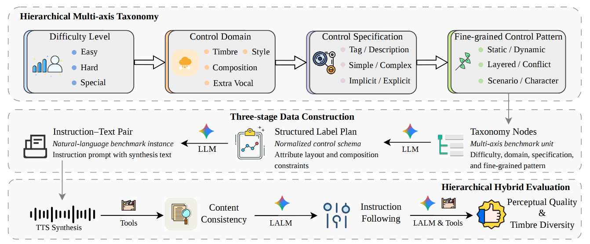
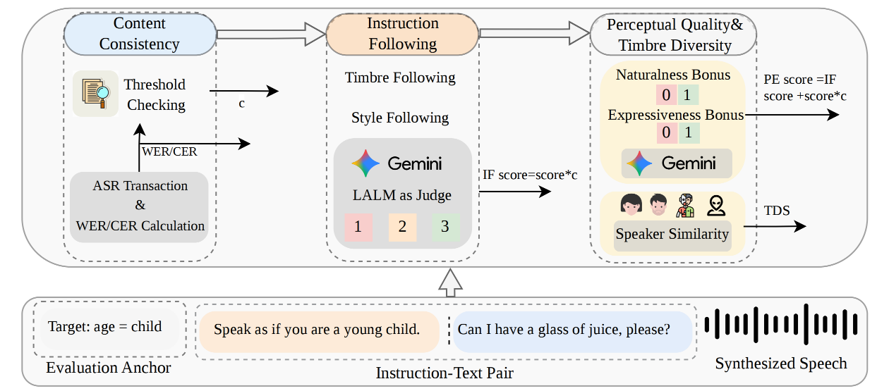

Overview
Abstract
Instruction-following text-to-speech (TTS) has emerged as an important capability for controllable and expressive speech generation, yet its evaluation remains underdeveloped due to limited benchmark coverage, weak diagnostic granularity, and insufficient multilingual support. We present MINT-Bench, a comprehensive multilingual benchmark for instruction-following TTS. MINT-Bench is built upon a hierarchical multi-axis taxonomy, a scalable multi-stage data construction pipeline, and a hierarchical hybrid evaluation protocol that jointly assesses content consistency, instruction following, and perceptual quality. Experiments across ten languages show that current systems remain far from solved: frontier commercial systems lead overall, while leading open-source models become highly competitive and can even outperform commercial counterparts in localized settings such as Chinese. The benchmark further reveals that harder compositional and paralinguistic controls remain major bottlenecks for current systems. We release MINT-Bench together with the data construction and evaluation toolkit to support future research on controllable, multilingual, and diagnostically grounded TTS evaluation.
MINT-Bench Framework

Figure 1: Overview of MINT-Bench. Rather than treating instruction-following TTS evaluation as a flat collection of prompts, MINT-Bench formulates it as a structured benchmark construction and evaluation problem. The framework consists of three tightly coupled components: a Hierarchical Multi-axis Taxonomy that organizes benchmark coverage, a controlled Three-stage Data Construction Pipeline that instantiates valid benchmark cases into natural-language items, and a Hierarchical Hybrid Evaluation Protocol that assesses synthesized speech from multiple complementary perspectives.
Hierarchical Hybrid Evaluation Protocol

Figure 2: Hierarchical hybrid evaluation protocol of MINT-Bench. The pipeline progressively evaluates content consistency, instruction following, perceptual quality, and timbre diversity.
Leaderboard
Overall Leaderboard
raw score (unpenalized), Word Error Rate (WER), and the content consistency pass rate (Pass).
| Model | Overall avg | Timbre avg | Style avg | Easy | Hard | Special | ||||||||||
|---|---|---|---|---|---|---|---|---|---|---|---|---|---|---|---|---|
| Tag | Direct | Simple-comp | complex comp | Persona | Abnormal | Nonverbal | ||||||||||
| multi-comp | dynamic | layered | conflict | scenario | character | disfluency | dysphonia | implicit | explicit | |||||||
| geminiflash | 2.44 / 3.66 raw 2.68 / 4.02 WER 1.4% | Pass 91.0% |
2.33 / 3.37 raw 2.62 / 3.78 WER 1.7% | Pass 89.1% |
2.59 / 3.96 raw 2.84 / 4.34 WER 1.2% | Pass 91.3% |
2.50 / 3.74 raw 2.73 / 4.08 WER 1.3% | Pass 91.7% |
2.53 / 3.81 raw 2.79 / 4.21 WER 1.5% | Pass 90.5% |
2.65 / 4.07 raw 2.89 / 4.44 WER 0.8% | Pass 91.7% |
2.50 / 3.64 raw 2.76 / 4.03 WER 1.6% | Pass 90.3% |
2.24 / 3.54 raw 2.78 / 4.39 WER 2.1% | Pass 80.6% |
2.46 / 3.94 raw 2.81 / 4.50 WER 1.2% | Pass 87.5% |
2.31 / 3.25 raw 2.47 / 3.47 WER 0.8% | Pass 93.8% |
2.28 / 3.38 raw 2.63 / 3.90 WER 1.1% | Pass 86.7% |
2.17 / 3.22 raw 2.50 / 3.70 WER 1.5% | Pass 86.9% |
1.95 / 2.55 raw 1.95 / 2.55 WER nan% | Pass 100.0% |
2.62 / 4.08 raw 2.62 / 4.08 WER nan% | Pass 100.0% |
2.56 / 3.94 raw 2.56 / 3.94 WER nan% | Pass 100.0% |
2.31 / 3.56 raw 2.31 / 3.56 WER nan% | Pass 100.0% |
| geminipro | 2.39 / 3.45 raw 2.65 / 3.83 WER 1.4% | Pass 90.1% |
2.34 / 3.17 raw 2.61 / 3.54 WER 1.5% | Pass 89.5% |
2.53 / 3.73 raw 2.81 / 4.15 WER 1.3% | Pass 90.1% |
2.47 / 3.49 raw 2.72 / 3.85 WER 1.5% | Pass 90.7% |
2.51 / 3.64 raw 2.80 / 4.06 WER 1.6% | Pass 89.6% |
2.52 / 3.60 raw 2.83 / 4.06 WER 1.2% | Pass 88.9% |
2.44 / 3.32 raw 2.62 / 3.57 WER 1.2% | Pass 93.1% |
2.35 / 3.80 raw 2.92 / 4.72 WER 1.4% | Pass 80.6% |
2.23 / 3.38 raw 2.75 / 4.16 WER 1.6% | Pass 81.2% |
2.40 / 3.57 raw 2.56 / 3.81 WER 0.8% | Pass 93.8% |
2.22 / 3.26 raw 2.57 / 3.77 WER 1.1% | Pass 86.7% |
2.05 / 2.91 raw 2.40 / 3.42 WER 1.3% | Pass 85.1% |
1.90 / 2.40 raw 1.80 / 2.40 WER nan% | Pass 100.0% |
2.71 / 4.21 raw 2.71 / 4.21 WER nan% | Pass 100.0% |
2.31 / 3.50 raw 2.31 / 3.50 WER nan% | Pass 100.0% |
2.35 / 3.58 raw 2.35 / 3.58 WER nan% | Pass 100.0% |
| elevenlabs | 2.23 / 3.12 raw 2.50 / 3.50 WER 1.4% | Pass 89.2% |
2.44 / 3.27 raw 2.74 / 3.67 WER 1.4% | Pass 89.2% |
2.25 / 3.13 raw 2.53 / 3.51 WER 1.4% | Pass 89.2% |
2.35 / 3.22 raw 2.64 / 3.61 WER 1.4% | Pass 89.2% |
2.25 / 3.06 raw 2.52 / 3.43 WER 1.4% | Pass 89.2% |
2.55 / 3.65 raw 2.86 / 4.09 WER 1.4% | Pass 89.2% |
2.30 / 3.00 raw 2.58 / 3.36 WER 1.4% | Pass 89.2% |
1.91 / 2.50 raw 2.14 / 2.81 WER 1.4% | Pass 89.2% |
2.26 / 3.21 raw 2.53 / 3.59 WER 1.4% | Pass 89.2% |
2.29 / 3.30 raw 2.57 / 3.70 WER 1.4% | Pass 89.2% |
2.50 / 3.95 raw 2.80 / 4.43 WER 1.4% | Pass 89.2% |
2.42 / 3.66 raw 2.72 / 4.11 WER 1.4% | Pass 89.2% |
0.89 / 0.89 raw 1.00 / 1.00 WER 1.4% | Pass 89.2% |
1.56 / 2.08 raw 1.75 / 2.33 WER 1.4% | Pass 89.2% |
1.27 / 1.61 raw 1.42 / 1.81 WER 1.4% | Pass 89.2% |
2.29 / 3.40 raw 2.56 / 3.81 WER 1.4% | Pass 89.2% |
| qwen3tts | 2.12 / 2.94 raw 2.33 / 3.24 WER 1.5% | Pass 90.9% |
2.28 / 3.16 raw 2.55 / 3.53 WER 1.3% | Pass 89.4% |
2.16 / 3.03 raw 2.39 / 3.34 WER 1.3% | Pass 90.7% |
2.20 / 3.14 raw 2.46 / 3.51 WER 1.7% | Pass 89.4% |
2.13 / 2.96 raw 2.39 / 3.33 WER 2.2% | Pass 89.1% |
2.44 / 3.44 raw 2.67 / 3.75 WER 0.9% | Pass 91.7% |
2.35 / 3.27 raw 2.53 / 3.51 WER 1.0% | Pass 93.1% |
1.57 / 1.99 raw 1.89 / 2.39 WER 0.9% | Pass 83.3% |
2.11 / 2.90 raw 2.41 / 3.31 WER 1.0% | Pass 87.5% |
2.15 / 2.79 raw 2.22 / 2.88 WER 0.4% | Pass 96.9% |
2.06 / 2.97 raw 2.47 / 3.57 WER 1.3% | Pass 83.3% |
2.12 / 2.96 raw 2.38 / 3.31 WER 1.3% | Pass 89.3% |
1.20 / 1.20 raw 1.20 / 1.20 WER nan% | Pass 100.0% |
2.21 / 3.29 raw 2.21 / 3.29 WER nan% | Pass 100.0% |
1.81 / 2.44 raw 1.81 / 2.44 WER nan% | Pass 100.0% |
1.59 / 2.03 raw 1.59 / 2.03 WER nan% | Pass 100.0% |
| minimax | 1.95 / 2.62 raw 2.15 / 2.89 WER 1.4% | Pass 90.5% |
2.12 / 2.82 raw 2.39 / 3.19 WER 1.5% | Pass 88.6% |
2.04 / 2.77 raw 2.26 / 3.08 WER 1.4% | Pass 90.2% |
2.07 / 2.85 raw 2.30 / 3.16 WER 1.7% | Pass 90.1% |
1.99 / 2.65 raw 2.22 / 2.96 WER 1.6% | Pass 89.5% |
2.35 / 3.20 raw 2.68 / 3.65 WER 1.3% | Pass 87.5% |
2.27 / 3.02 raw 2.44 / 3.25 WER 1.1% | Pass 93.0% |
1.53 / 1.99 raw 1.83 / 2.39 WER 0.8% | Pass 83.3% |
1.57 / 2.02 raw 2.09 / 2.69 WER 2.9% | Pass 75.0% |
2.07 / 2.83 raw 2.07 / 2.83 WER 0.1% | Pass 100.0% |
2.06 / 3.00 raw 2.47 / 3.60 WER 1.4% | Pass 83.3% |
2.09 / 2.93 raw 2.32 / 3.25 WER 1.2% | Pass 90.2% |
1.00 / 1.00 raw 1.00 / 1.00 WER nan% | Pass 100.0% |
1.08 / 1.17 raw 1.08 / 1.17 WER nan% | Pass 100.0% |
1.26 / 1.48 raw 1.26 / 1.48 WER nan% | Pass 100.0% |
1.00 / 1.00 raw 1.00 / 1.00 WER nan% | Pass 100.0% |
| moss1b7 | 1.90 / 2.53 raw 2.20 / 2.93 WER 2.8% | Pass 86.4% |
2.01 / 2.61 raw 2.38 / 3.08 WER 2.8% | Pass 84.6% |
1.99 / 2.72 raw 2.30 / 3.14 WER 2.7% | Pass 86.5% |
1.97 / 2.52 raw 2.25 / 2.89 WER 2.2% | Pass 87.5% |
1.90 / 2.57 raw 2.27 / 3.06 WER 3.5% | Pass 83.8% |
2.29 / 3.09 raw 2.54 / 3.42 WER 0.9% | Pass 90.1% |
2.01 / 2.78 raw 2.34 / 3.24 WER 4.5% | Pass 85.7% |
1.71 / 2.35 raw 2.36 / 3.25 WER 4.0% | Pass 72.2% |
1.90 / 2.64 raw 2.34 / 3.25 WER 2.4% | Pass 81.2% |
2.11 / 2.84 raw 2.25 / 3.03 WER 0.9% | Pass 93.8% |
1.76 / 2.17 raw 2.03 / 2.50 WER 1.0% | Pass 86.7% |
1.74 / 2.28 raw 2.20 / 2.90 WER 3.6% | Pass 78.7% |
1.30 / 1.50 raw 1.30 / 1.50 WER nan% | Pass 100.0% |
2.04 / 2.92 raw 2.04 / 2.92 WER nan% | Pass 100.0% |
1.97 / 2.77 raw 1.97 / 2.77 WER nan% | Pass 100.0% |
1.16 / 1.28 raw 1.16 / 1.28 WER nan% | Pass 100.0% |
| hume | 1.86 / 2.51 raw 2.07 / 2.79 WER 1.6% | Pass 89.9% |
2.08 / 2.86 raw 2.39 / 3.30 WER 1.8% | Pass 86.7% |
1.95 / 2.69 raw 2.16 / 2.98 WER 1.4% | Pass 89.5% |
2.10 / 3.00 raw 2.38 / 3.41 WER 2.0% | Pass 88.1% |
2.08 / 2.98 raw 2.27 / 3.26 WER 1.3% | Pass 91.4% |
2.22 / 3.11 raw 2.57 / 3.60 WER 1.3% | Pass 86.6% |
2.00 / 2.71 raw 2.17 / 2.94 WER 1.2% | Pass 92.2% |
1.65 / 1.99 raw 1.92 / 2.31 WER 1.9% | Pass 86.1% |
1.52 / 1.62 raw 1.81 / 1.94 WER 1.9% | Pass 83.9% |
1.44 / 1.68 raw 1.60 / 1.87 WER 1.2% | Pass 90.0% |
1.97 / 2.56 raw 2.37 / 3.07 WER 1.3% | Pass 83.3% |
1.74 / 2.28 raw 2.03 / 2.66 WER 1.8% | Pass 85.7% |
1.00 / 1.00 raw 1.00 / 1.00 WER nan% | Pass 100.0% |
1.00 / 1.00 raw 1.00 / 1.00 WER nan% | Pass 100.0% |
1.00 / 1.00 raw 1.00 / 1.00 WER nan% | Pass 100.0% |
1.03 / 1.03 raw 1.03 / 1.03 WER nan% | Pass 100.0% |
| mimo | 1.75 / 2.22 raw 2.13 / 2.70 WER 3.5% | Pass 82.2% |
1.80 / 2.17 raw 2.29 / 2.76 WER 4.1% | Pass 78.6% |
1.83 / 2.37 raw 2.24 / 2.91 WER 3.1% | Pass 81.5% |
1.87 / 2.42 raw 2.24 / 2.89 WER 3.2% | Pass 83.8% |
1.79 / 2.28 raw 2.22 / 2.83 WER 4.5% | Pass 80.3% |
2.03 / 2.49 raw 2.47 / 3.04 WER 2.0% | Pass 81.9% |
1.95 / 2.49 raw 2.31 / 2.94 WER 3.3% | Pass 84.5% |
1.44 / 1.81 raw 2.00 / 2.50 WER 3.1% | Pass 72.2% |
1.25 / 1.46 raw 2.00 / 2.34 WER 5.0% | Pass 62.5% |
1.71 / 2.25 raw 2.28 / 3.00 WER 2.9% | Pass 75.0% |
1.89 / 2.53 raw 2.27 / 3.03 WER 2.1% | Pass 83.3% |
1.63 / 2.13 raw 2.16 / 2.82 WER 3.3% | Pass 75.4% |
1.05 / 1.05 raw 1.05 / 1.05 WER nan% | Pass 100.0% |
1.96 / 2.54 raw 1.96 / 2.54 WER nan% | Pass 100.0% |
1.47 / 1.91 raw 1.47 / 1.91 WER nan% | Pass 100.0% |
1.03 / 1.03 raw 1.03 / 1.03 WER nan% | Pass 100.0% |
| gpt4omini | 1.69 / 2.15 raw 1.89 / 2.40 WER 1.7% | Pass 89.4% |
1.70 / 2.09 raw 1.91 / 2.35 WER 1.9% | Pass 88.6% |
1.78 / 2.30 raw 1.98 / 2.56 WER 1.4% | Pass 90.0% |
1.63 / 2.07 raw 1.81 / 2.31 WER 1.6% | Pass 90.0% |
1.83 / 2.42 raw 2.03 / 2.68 WER 2.0% | Pass 90.2% |
1.74 / 2.16 raw 1.96 / 2.43 WER 1.4% | Pass 88.9% |
1.81 / 2.22 raw 1.97 / 2.42 WER 1.4% | Pass 91.7% |
1.72 / 2.24 raw 2.14 / 2.78 WER 1.3% | Pass 80.6% |
1.74 / 2.19 raw 2.06 / 2.59 WER 1.4% | Pass 84.4% |
1.87 / 2.40 raw 2.00 / 2.57 WER 0.9% | Pass 93.3% |
1.61 / 1.89 raw 2.10 / 2.47 WER 1.5% | Pass 76.7% |
1.47 / 1.79 raw 1.78 / 2.16 WER 2.2% | Pass 82.8% |
1.30 / 1.30 raw 1.30 / 1.30 WER nan% | Pass 100.0% |
1.88 / 2.71 raw 1.88 / 2.71 WER nan% | Pass 100.0% |
1.62 / 2.19 raw 1.62 / 2.19 WER nan% | Pass 100.0% |
1.59 / 2.03 raw 1.59 / 2.03 WER nan% | Pass 100.0% |
| mingmoe | 1.51 / 1.79 raw 1.70 / 2.01 WER 1.8% | Pass 89.1% |
1.68 / 1.94 raw 1.91 / 2.20 WER 1.8% | Pass 88.2% |
1.58 / 1.89 raw 1.75 / 2.10 WER 1.5% | Pass 90.0% |
1.70 / 2.17 raw 1.93 / 2.47 WER 2.1% | Pass 87.8% |
1.61 / 1.87 raw 1.79 / 2.08 WER 2.0% | Pass 90.1% |
1.99 / 2.43 raw 2.17 / 2.65 WER 0.8% | Pass 91.7% |
1.41 / 1.52 raw 1.52 / 1.63 WER 1.0% | Pass 93.0% |
1.60 / 2.06 raw 1.92 / 2.47 WER 1.4% | Pass 83.3% |
1.27 / 1.32 raw 1.56 / 1.62 WER 2.0% | Pass 81.2% |
1.20 / 1.20 raw 1.38 / 1.38 WER 1.6% | Pass 87.5% |
1.56 / 1.99 raw 1.80 / 2.30 WER 1.0% | Pass 86.7% |
1.31 / 1.55 raw 1.62 / 1.91 WER 2.0% | Pass 81.0% |
1.00 / 1.00 raw 1.00 / 1.00 WER nan% | Pass 100.0% |
1.00 / 1.00 raw 1.00 / 1.00 WER nan% | Pass 100.0% |
1.03 / 1.03 raw 1.03 / 1.03 WER nan% | Pass 100.0% |
1.12 / 1.25 raw 1.12 / 1.25 WER nan% | Pass 100.0% |
| mingdense | 1.41 / 1.70 raw 1.63 / 1.96 WER 2.4% | Pass 86.4% |
1.55 / 1.91 raw 1.80 / 2.21 WER 2.5% | Pass 86.2% |
1.46 / 1.75 raw 1.68 / 2.02 WER 2.2% | Pass 86.7% |
1.62 / 2.10 raw 1.85 / 2.39 WER 2.3% | Pass 87.8% |
1.46 / 1.88 raw 1.76 / 2.26 WER 3.5% | Pass 83.3% |
1.69 / 2.08 raw 1.93 / 2.38 WER 1.4% | Pass 87.5% |
1.41 / 1.48 raw 1.54 / 1.61 WER 1.3% | Pass 91.7% |
1.33 / 1.55 raw 1.62 / 1.88 WER 2.1% | Pass 82.4% |
1.08 / 1.12 raw 1.50 / 1.56 WER 2.9% | Pass 71.9% |
1.23 / 1.29 raw 1.41 / 1.47 WER 2.2% | Pass 87.5% |
1.20 / 1.33 raw 1.57 / 1.73 WER 1.4% | Pass 76.7% |
1.27 / 1.54 raw 1.58 / 1.91 WER 2.4% | Pass 80.7% |
1.00 / 1.00 raw 1.00 / 1.00 WER nan% | Pass 100.0% |
1.04 / 1.04 raw 1.04 / 1.04 WER nan% | Pass 100.0% |
1.06 / 1.13 raw 1.06 / 1.13 WER nan% | Pass 100.0% |
1.00 / 1.00 raw 1.00 / 1.00 WER nan% | Pass 100.0% |
| parlerttslarge | 1.38 / 1.52 raw 1.72 / 1.90 WER 4.4% | Pass 80.2% |
1.61 / 1.71 raw 2.02 / 2.14 WER 3.8% | Pass 79.7% |
1.49 / 1.68 raw 1.84 / 2.08 WER 4.0% | Pass 81.0% |
1.45 / 1.61 raw 1.82 / 2.03 WER 4.5% | Pass 79.3% |
1.65 / 1.85 raw 1.92 / 2.15 WER 2.5% | Pass 85.9% |
1.74 / 1.88 raw 2.12 / 2.29 WER 2.6% | Pass 81.9% |
1.64 / 1.76 raw 1.90 / 2.04 WER 2.7% | Pass 86.1% |
0.85 / 0.88 raw 1.61 / 1.67 WER 6.9% | Pass 52.8% |
1.35 / 1.55 raw 1.97 / 2.25 WER 6.4% | Pass 68.8% |
1.15 / 1.39 raw 1.75 / 2.12 WER 10.5% | Pass 65.6% |
0.93 / 1.03 raw 1.27 / 1.40 WER 4.4% | Pass 73.3% |
0.94 / 1.01 raw 1.39 / 1.51 WER 5.6% | Pass 67.2% |
1.15 / 1.15 raw 1.15 / 1.15 WER nan% | Pass 100.0% |
1.92 / 2.29 raw 1.92 / 2.29 WER nan% | Pass 100.0% |
1.06 / 1.12 raw 1.06 / 1.12 WER nan% | Pass 100.0% |
1.00 / 1.00 raw 1.00 / 1.00 WER nan% | Pass 100.0% |
| parlerttsmini | 1.04 / 1.13 raw 1.55 / 1.69 WER 17.5% | Pass 67.1% |
1.11 / 1.17 raw 1.65 / 1.73 WER 9.7% | Pass 67.7% |
1.13 / 1.25 raw 1.68 / 1.87 WER 16.4% | Pass 67.2% |
1.18 / 1.29 raw 1.71 / 1.87 WER 12.7% | Pass 69.1% |
1.28 / 1.39 raw 1.73 / 1.88 WER 18.3% | Pass 74.0% |
1.00 / 1.04 raw 1.67 / 1.74 WER 13.2% | Pass 59.7% |
1.23 / 1.40 raw 1.64 / 1.86 WER 8.8% | Pass 75.0% |
0.75 / 0.82 raw 1.42 / 1.56 WER 15.5% | Pass 52.8% |
0.90 / 1.01 raw 1.69 / 1.91 WER 14.6% | Pass 53.1% |
0.73 / 0.80 raw 1.47 / 1.59 WER 12.9% | Pass 50.0% |
0.45 / 0.48 raw 1.13 / 1.20 WER 19.0% | Pass 40.0% |
0.51 / 0.54 raw 1.19 / 1.26 WER 30.5% | Pass 42.6% |
1.00 / 1.00 raw 1.00 / 1.00 WER nan% | Pass 100.0% |
2.33 / 3.04 raw 2.33 / 3.04 WER nan% | Pass 100.0% |
1.12 / 1.25 raw 1.12 / 1.25 WER nan% | Pass 100.0% |
1.00 / 1.00 raw 1.00 / 1.00 WER nan% | Pass 100.0% |
Detailed Leaderboard
| Taxonomy Node |
|---|